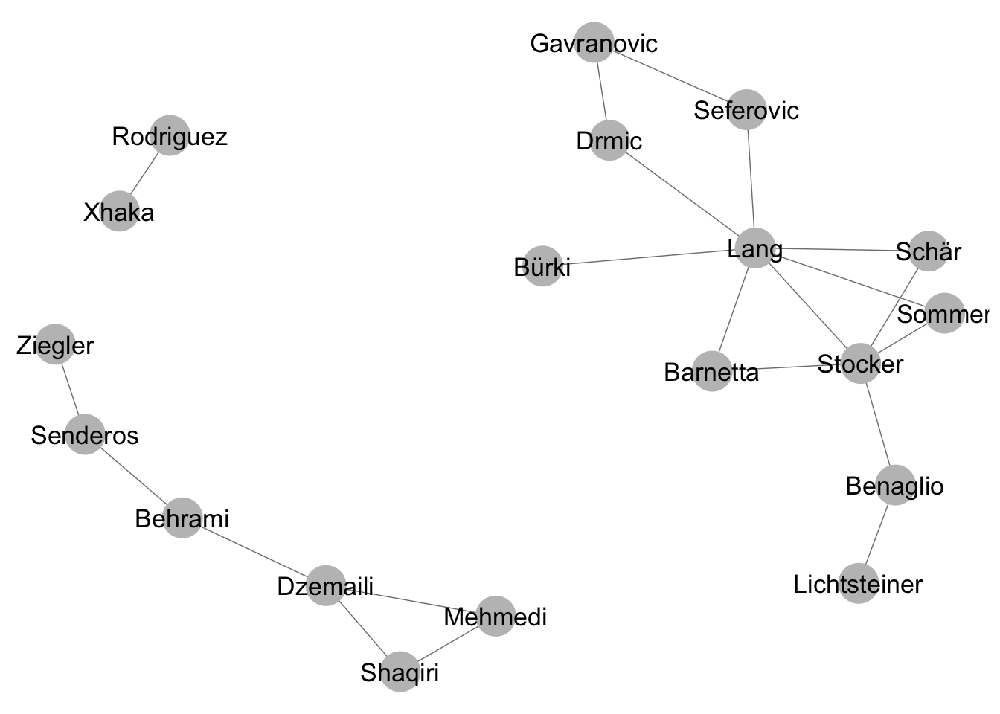

3 Network data: how to store and use network data
3.1 Different formats to store network data
Relational data consist of nodes and edges between these nodes. Data on the nodes—nodal attributes—can be stored in the conventional way of storing observational data: in a data frame where each row corresponds to each node (observation) in the network and columns to variables (eg. gender). The edges that make up a network need to be stored in a slightly more complex manner.
Take the following network of friendship relations between members of the Swiss national soccer team, leading up to the 2014 world championship. Players were asked in a series of interviews with each player in Neue Zürcher Zeitung about their friends in the team. This information was used to create a network dataset for illustrative purposes. https://www.nzz.ch/sport/wm-2014/portraetserie-der-schweizer-nationalspieler-1.18315579
Figure 3.1: Friendship relations between members of the Swiss national soccer team
To store the network data leading to the network plot, the sender and target nodes of each edge in the network have to be recorded. There are multiple ways of storing network data. The simplest form is called a edgelist, where each row in a data set corresponds to a tie in the network:
## Sender Receiver
## 2 Gavranovic Drmic
## 3 Gavranovic Seferovic
## 4 Lang Sommer
## 5 Lang Schär
## 6 Lang Seferovic
## 7 Lang Barnetta
## 8 Lang Drmic
## 9 Bürki Lang
## 10 Schär Stocker
## 11 Sommer Stocker
## 12 Stocker Benaglio
## 13 Stocker Barnetta
## 14 Stocker Schär
## 15 Stocker Sommer
## 16 Stocker Lang
## 17 Shaqiri Mehmedi
## 18 Benaglio Lichtsteiner
## 20 Xhaka Rodriguez
## 22 Lichtsteiner Benaglio
## 23 Rodriguez Xhaka
## 27 Dzemaili Mehmedi
## 28 Dzemaili Shaqiri
## 29 Dzemaili Behrami
## 31 Mehmedi Shaqiri
## 32 Senderos Ziegler
## 33 Senderos Behrami
## 34 Behrami SenderosHere the rows correspond to the edges in the network, the columns correspond to sender nodes myel[,1] and target nodes myel[,2].
An alternative way of storing network data is by creating an adjacency matrix with all unique nodes in the rows as well as in the columns:
## Gavranovic Lang Bürki Schär Sommer Stocker Shaqiri Benaglio
## Gavranovic 0 0 0 0 0 0 0 0
## Lang 0 0 0 1 1 0 0 0
## Bürki 0 1 0 0 0 0 0 0
## Schär 0 0 0 0 0 1 0 0
## Sommer 0 0 0 0 0 1 0 0
## Stocker 0 1 0 1 1 0 0 1
## Shaqiri 0 0 0 0 0 0 0 0
## Benaglio 0 0 0 0 0 0 0 0
## Xhaka 0 0 0 0 0 0 0 0
## Lichtsteiner 0 0 0 0 0 0 0 1
## Xhaka Lichtsteiner
## Gavranovic 0 0
## Lang 0 0
## Bürki 0 0
## Schär 0 0
## Sommer 0 0
## Stocker 0 0
## Shaqiri 0 0
## Benaglio 0 1
## Xhaka 0 0
## Lichtsteiner 0 0Here, every possible tie in a network is listed in the data set, for instance sender a tying to target b. If this tie exists, if (a, b) are indeed linked in the network, the matrix alotts them a 1. If (a, b) are not linked, they receive a 0 in the adjacency matrix. This way of storing network data also preserves the direction of the tie. Entries in the lower triangle of the matrix specify a tie from row entry to column entry and vice versa for the upper triangle. For large networks, storing data in adjacency matrices can become inefficient, as a lot of information is redundant (non-existing ties). However, many ways of computing network statistics operate directly on the adjaceny matrix.
A third way of storing network data is through adjacency lists. Adjacency list specify a sender first and then list all receivers. They are the most efficient format for gathering data in the field or transcribing/ entering data by hand.
## [,1] [,2]
## [1,] "Gavranovic" "Drmic,Seferovic"
## [2,] "Lang" "Schär,Sommer,Drmic,Seferovic,Barnetta"
## [3,] "Bürki" "Lang"
## [4,] "Schär" "Stocker"
## [5,] "Sommer" "Stocker"
## [6,] "Stocker" "Lang,Schär,Sommer,Benaglio,Barnetta"
## [7,] "Shaqiri" "Mehmedi"
## [8,] "Benaglio" "Lichtsteiner"
## [9,] "Xhaka" "Rodriguez"
## [10,] "Lichtsteiner" "Benaglio"
## [11,] "Rodriguez" "Xhaka"
## [12,] "Dzemaili" "Shaqiri,Mehmedi,Behrami"
## [13,] "Mehmedi" "Shaqiri"
## [14,] "Senderos" "Behrami,Ziegler"
## [15,] "Behrami" "Senderos"
## [16,] "Drmic" ""
## [17,] "Seferovic" ""
## [18,] "Barnetta" ""
## [19,] "Ziegler" ""As mentioned above, nodal attributes can be stored in a data frame with row corresponding to unique nodes and columns to variables:
## Name Position
## 2 Gavranovic Stürmer
## 3 Lang Verteidiger
## 5 Bürki Goalie
## 6 Schär Verteidiger
## 7 Sommer Goalie
## 8 Stocker Mittelfeld
## 9 Shaqiri Stürmer
## 10 Benaglio Goalie
## 12 Xhaka Mittelfeld
## 14 Lichtsteiner Verteidiger
## 15 Rodriguez Verteidiger
## 20 Barnetta Mittelfeld
## 17 Mehmedi Stürmer
## 18 Senderos Verteidiger
## 19 Behrami Mittelfeld
## 22 Dzemaili Mittelfeld
## 23 Seferovic Stürmer
## 16 Drmic Stürmer
## 21 Ziegler Verteidiger3.2 Dealing with network data in R
3.2.1 Storing network data using edge lists
Read in the network data of the Swiss national socer team.
3.2.2 Converting an edge list to adjacency matrix
3.2.3 Converting an adjacency list to adjacency
3.2.4 Storing nodal attributes the right way
3.2.5 The network object from the statnet-package
3.3 Different Network types: one-mode and two-mode networks
Two-mode networks consist of two disjoint sets of nodes (modes) with relations only possible between modes. For example, a two-mode network could illustrate associations between Swiss national soccer players and the clubs they played in between 2012 and 2014.

A matrix storing ties for a two-mode network is rectangular and commonly referred to as an incidence or occurence matrix.
## FC Zürich GC FC Schaffhausen 1. FSV Mainz 05 FC St. Gallen
## Gavranovic 1 0 0 1 0
## Lang 0 1 0 0 1
## Bürki 0 1 1 0 0
## Schär 0 0 0 0 0
## FC Wil FC Basel
## Gavranovic 0 0
## Lang 0 0
## Bürki 0 0
## Schär 1 1A projection onto a one-mode network can be achieved by multiplying the rectangular matrix by its transpose. Now players are connected based on whether they played together in the same clubs.
one_mode_projection <- bip_mat %*% t(bip_mat)
diag(one_mode_projection) <- 0 #exclude self-ties
one_mode_projection[1:10,1:10] #look at the first 10 players## Gavranovic Lang Bürki Schär Sommer Stocker Shaqiri Benaglio
## Gavranovic 0 0 0 0 0 0 0 0
## Lang 0 0 1 0 1 0 0 0
## Bürki 0 1 0 0 1 0 0 0
## Schär 0 0 0 0 0 1 1 0
## Sommer 0 1 1 0 0 0 0 0
## Stocker 0 0 0 1 0 0 1 0
## Shaqiri 0 0 0 1 0 1 0 0
## Benaglio 0 0 0 0 0 0 0 0
## Xhaka 0 0 0 1 1 1 1 0
## Lichtsteiner 0 0 0 0 0 0 0 0
## Xhaka Lichtsteiner
## Gavranovic 0 0
## Lang 0 0
## Bürki 0 0
## Schär 1 0
## Sommer 1 0
## Stocker 1 0
## Shaqiri 1 0
## Benaglio 0 0
## Xhaka 0 0
## Lichtsteiner 0 0ggnet2(network(one_mode_projection),
label = TRUE)
3.4 Network visualization
3.4.1 A word of warning
Network visualizations are at the same time pretty and dangerous. Be aware that nodes will always be placed on a canvas through an algorithm. The choice of a different algorithm can lead to a vastly different illustration. It is thus easy to convey substantive results that are just artefacts of the visualization procedure, for example regarding the centrality of actors. It is in your responsibility to use visualization to augment, not distort interpretation. If you read a network study engaging in “visual interpretation” - look for the numbers. Do they back up the story?
3.4.2 Resources for visualization
For pretty graphs in R, ggnet2 is hard to beat. https://briatte.github.io/ggnet/
For more advanced (and even prettier) visualizations, Gephi is a dedicated open source project (although somewhat buggy). https://gephi.org/